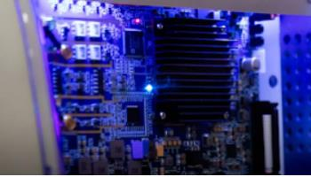

Tesis: La educación en computación cuántica debe implementarse gradualmente en las universidades para preparar a los profesionales del futuro
junio 13, 2026
Computación cuántica y educación superior: el desafío de formar a los ingenieros del mañana.
La computación cuántica representa un cambio de paradigma frente a la computación convencional. Sus chips trabajan de manera distinta a los tradicionales y utilizan unidades llamadas qubits, del inglés quantum bit. A diferencia de un bit clásico, un qubit puede aprovechar la superposición y representar una combinación de estados hasta que se mide. Esta propiedad abre nuevas posibilidades para ciertos algoritmos y tareas complejas, especialmente en criptografía y seguridad de datos.
Los usos de esta tecnología son diversos y crecen rápidamente, aunque sigue siendo emergente y todavía debe desarrollarse. Sus aplicaciones abarcan desde la seguridad y la criptografía hasta la industria farmacéutica. En el futuro, las computadoras cuánticas podrían simular moléculas y apoyar el diseño de medicamentos nuevos.
Ante este panorama, las instituciones de educación superior podrían integrar gradualmente la computación cuántica en sus planes de estudio, preparando profesionales competentes y alineados con las tendencias tecnológicas.

Esta transición ya comenzó en algunas universidades. La UNAM de México cuenta con dos equipos cuánticos (Suárez, 2023), y la UNAHUR de Argentina con uno (Neira, 2026). La formación universitaria puede acercar estas tecnologías a los estudiantes mediante asignaturas y experiencias prácticas.
En Europa y en algunas universidades de Latinoamérica ya existen asignaturas y posgrados de ingeniería cuántica. Plataformas en la nube, como IBM Quantum, permiten que los estudiantes programen procesadores cuánticos reales desde sus aulas. Esto muestra que el aprendizaje de software cuántico puede empezar hoy y que esta competencia ya es relevante para el presente.
Sin embargo, el proceso enfrenta obstáculos. La investigación de Paola Alejandra Espinoza Cevallos para la revista Kosmos señala el potencial de la inteligencia artificial y la computación cuántica en las universidades, pero también identifica retos como la falta de formación docente y la necesidad de marcos pedagógicos específicos.
Por ello, es necesario que los docentes tengan oportunidades de formación para preparar a sus estudiantes de ingeniería ante los cambios tecnológicos que vienen.
Bibliografía
Bonillo, V. M. (2013). Principios fundamentales de computación cuántica. Universidad de La Coruña.
Consultar documento
Cevallos, P. A. E. (2024). Pedagogía cuántica: aplicaciones de computación cuántica en educación personalizada. Revista Científica Kosmos, 3(2), 170–186.
Consultar artículo
Neira, S. (2026). La primera computadora cuántica en universidades argentinas: así se capacita el talento para la próxima revolución tecnológica. Infobae.
Consultar artículo
Pérez, D. L. B., Villalobos, A. C. S. y Tamayo, L. J. H. (2025). Impacto de la computación cuántica en las organizaciones y su infraestructura tecnológica. CITAS: Ciencia, innovación, tecnología, ambiente y sociedad, 11(2), 10.
Consultar artículo
Suárez, P. L. (2023). Adquiere la Facultad de Ingeniería dos computadoras cuánticas. Gaceta UNAM.
Consultar nota